Particle Effects
This lesson introduces particle effects, and discusses their crucial components: Particle Systems, Particle Emitters, and Particle Animators.
Learning Objectives
- Understanding the three catagories of particle components.
- Experimenting with configuring particle effects.
- Understanding the basic purposes of particle effects.
- Creating basic weather effects using particles.
| Vocabulary | ||
|---|---|---|
| Particle | Particle System | Particle Emitter |
| ParticleAnimator | Variance | |
Create a New Project
A particle effect is a way of using a large number of small sprites or meshes to simulate something chaotic, abstract, or “fuzzy,” such as smoke, fire, explosions, rain, magical effects, and so on.
Each individual object created by a particle effect is called a particle. Normally, the word particle is used to mean something very small, but the particles spawned by a particle effect may be any size. Each particle has its own individual properties, like Translation, Velocity, etc, and they may have different values from one particle to the next.
In the Zero Engine, Particle Systems are composed of three main components and several extra optional components for added behavior.
The required components for any particle system are
- a Particle System component
- a Particle Emitter component
- a Particle Animator component
Create a Particle Effect
Command:
CreateTransformorIn the Properties Window
- Set Name to:
SparkleParticles - Click on Add Component... and then enter:
Particle
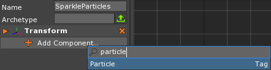
- Set Name to:
The particle-related components that we can add will appear in the pop-up list:
{kind=link}
Particle System
In the Properties Window
Add a SpriteParticleSystem component
The SpriteParticleSystem component
{kind=link}
The SpriteParticleSystem component falls under the Particle System
category. A Particle System component controls properties like
- the type of particle used (Sprites, in this case)
- the image resource used for the system’s Sprites
- the coordinate system the particles should live in
- how the particles should be graphically displayed or rendered
Let’s see what other components we can add to our particle effect.
In the Properties Window
- Click on Add Component... and then enter:
Particle
- Click on Add Component... and then enter:
Some of the choices that were grayed out before are now available because we
have a SpriteParticleSystem component already. Here are the available
particle effect-related components:
{kind=link}
Let’s start out with the SphericalParticleEmitter.
Particle Emitter
In the Properties Window
Add a SphericalParticleEmitter component
The SphericalParticleEmitter component
{kind=link}
The SphericalParticleEmitter component falls under the Particle Emitter
category. A Particle Emitter component controls the creation of particles using
specified characteristics, like
- the spawn location
- in the case of a
SphericalParticleEmitter, it’s a sphere around the emitter’s position
- in the case of a
- the number of particles to be spawned
- the size of the particles
- the particles’ starting velocities
- the life span of the particles
Let’s check the list of available components once more.
In the Properties Window
- Click on Add Component... and then enter:
Particle
- Click on Add Component... and then enter:
We see, again, a list of additional particle-related components that we can add to this effect. Our focus turns now to the various animators.
{kind=link}
We’ll go with the LinearParticleAnimator for now.
Particle Animator
In the Properties Window
Add a LinearParticleAnimator component
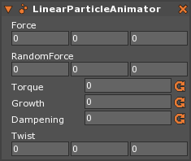
The LinearParticleAnimator component
The LinearParticleAnimator component falls under the Particle Animator
category. A Particle Animator component modifies the system’s particles that
already exist over the duration of their lifetimes. The
LinearParticleAnimator does things like changing the particles’ sizes and
applying forces to them.
Particles are now being created in the Level Window:
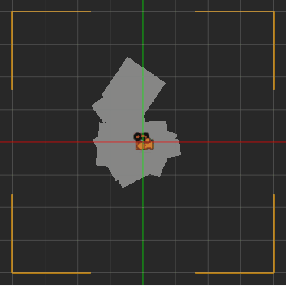
Notice that the particles are colorless squares, and are being created with
random initial velocities. This is because the SpriteParticleSystem
component’s Texture property is set to the default texture, and the
SphericalParticleEmitter component’s StartVelocity property is
[0, 0, 0] and its RandomVelocity property is
[2, 2, 2].
Let’s change the sprite the particles are using.
Import Particle Sprites
We’ll be using a handful of different sprites for our particles in this lesson.
Download the following files from the Void:
Cloud.pngFastSpark.pngFire.pngTwinkle.png
Select the SparkleParticles object
In the Properties Window
Under
SpriteParticleSystem- Set Texture to:
Twinkle - Set RenderMode to:
Additive
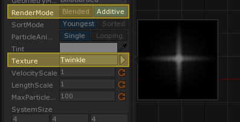
- Set Texture to:
Now let’s get rid of the velocity and make the particles spawn in a sphere shape using the SphericalParticleEmitter.
Make the
SphericalParticleEmittermatch these settings:
- Set SpinVariance to:
0- Set RandomSpin to:
false- Set RandomVelocity to:
[0, 0, 0]- Set EmitterSize to:
[5, 5, 5]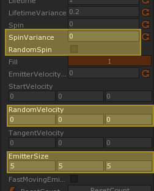
The particle effect is now emitting particles in the shape of a sphere with a
radius of 5 (hence the 5’s in the EmitterSize property). Let’s make it
more obvious that it’s a sphere.
- Set EmitRate to:
500
The EmitRate property controls how many particles are spawned per second, so particles should now be emitted more rapidly to fill the sphere before they die:
{kind=link}
- Under LinearParticleAnimator
- Set Growth to:
-1
The Growth property indicates how much each particle should change its size per second. Using a negative value for Growth causes the particles to shrink.
Let’s move on from the SparkleParticles effect for now.
- Under SphericalParticleEmitter
- Set Active to:
false
Particle Effect Properties
Here is a brief overview of the function of a few of the many properties of the constituent components of a particle effect.
Particle System (in this case, SpriteParticleSystem) |
|
|---|---|
RenderMode 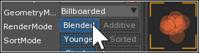 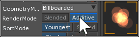 |
Determines the way that the sprites blend with one another
where they overlap. Generally, Additive should be
used with sprites that have a black background. |
| SystemSize | Defines the dimensions of an invisible box centered at the system’s Transform. If no part of this box can be “seen” by any active camera, then none of the system’s particles are drawn. |
Particle Emitter (in this case, SphericalParticleEmitter) |
|
|---|---|
| EmitCount | How many particles the emitter will spawn. If this property
is set to 0, then the emitter will spawn an infinite
number of particles. |
EmitRate 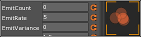 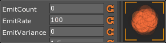 |
How many of the emitter’s particles will be spawned per
second. To effectively spawn them all at once, set this
property to its maximum value of 50000. |
| Spin | The rotational speed in degrees per second of each particle spawned. |
-Variance 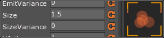 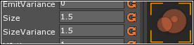 |
Each of the various Variance properties defines a range
of random values that will additionally be applied to its
corresponding invariant property. For instance, an emitter
with a Spin of 90 and a SpinVariance of 30
will spawn particles with rotational speeds ranging from
60 to 120 degrees per second. |
| RandomSpin | Whether or not the particles should be spawned with a random initial rotation. |
RandomVelocity |
The random variance of the particles’ starting velocities. |
{kind=link}
{kind=link}
EmitterSize 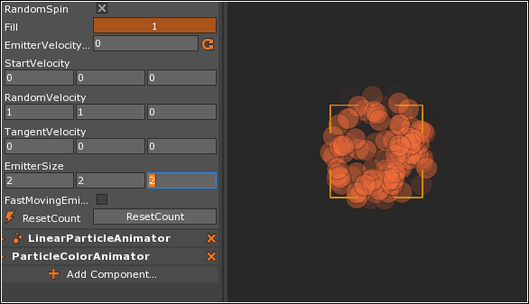 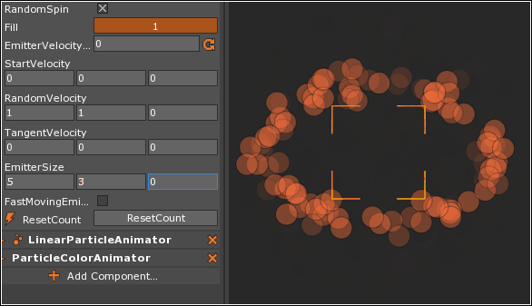 |
The dimensions of the volume within which the emitter may spawn particles.
|
| Linear Particle Animator | |
Force |
Determines a constant acceleration vector applied to each particle over its lifetime. |
{kind=link}
{kind=link}
| Growth | Indicates how much each particle should change its size per second. Using a negative value will cause the particle to shrink instead of grow. |
Make Another Particle Effect
We made the last particle effect from scratch for learning purposes. Now we’ll make another one, this time using the CreateParticleSystem command to make a basic particle effect that we can then modify to our liking.
Command:
CreateParticleSystemorSelect the BasicParticleEffect object we just created
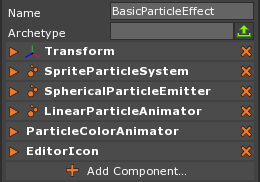
The starter particle effect comes with some basic components
{kind=link}
{kind=link}
Observe how the particles do not move when you move their system. The position
they are spawned in depends on the position of the emitter that spawned them,
but after that, they’re on their own. This is because they are using the World
coordinate system. We can make the particles follow their emitter by changing
the SystemSpace property on the SpriteParticleSystem component.
- In the Properties Window
- Under
SpriteParticleSystem- Set SystemSpace to:
LocalSpace
- Set SystemSpace to:
- Under
This will confine the system’s particles to the local coordinates of the BasicParticleEffect cog that spawned them.
Use the TranslateGizmo to move the BasicParticleEffect object again:
{kind=link}
{kind=link}
Now the particles remain locked in position relative to the BasicParticleEffect object, so that when it moves, they all move with it.
- In the Properties Window
- Under SpriteParticleSystem
- Set Texture to:
Square - Set RenderMode to:
Additive
- Set Texture to:
- Under SphericalParticleEmitter
- Set Size to:
2 - Set SizeVariance to:
1.5 - Set SpinVariance to:
0 - Set RandomSpin to:
false - Set RandomVelocity to:
[4, 4, 4]
- Set Size to:
- Under SpriteParticleSystem
Multiple Particle Animators
Unlike with the Emitter and System category of particle effect components, multiple Particle Animator components can live on the same particle effect at the same time. Different animators affect their particles in different ways, and we can combine them to get cool effects.
Notice how the BasicParticleEffect object already has two of them: the
LinearParticleAnimator component, which we’ve seen before, and also the
ParticleColorAnimator component.
ParticleColorAnimator
Under the ParticleColorAnimator component
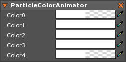
The ParticleColorAnimator component will make each particle’s color change
over its lifetime. Each particle will be created with a starting color of
Color0, and then the color will change over time, or interpolate, to
Color1, and then to Color2, and so on. Keep in mind that the particles’
colors will be multiplied by the Tint property of the
SpriteParticleSystem component to achieve the final color that is displayed,
so they may not appear exactly as chosen.
Set Color0 to:
[R: 255, G: 0, B: 0, A: 1.00],#FF0000Set Color1 to:
[R: 255, G: 212, B: 0, A: 1.00],#FFD400Set Color2 to:
[R: 0, G: 192, B: 96, A: 1.00],#00C060Set Color3 to:
[R: 64, G: 128, B: 255, A: 1.00],#4080FFSet Color4 to:
[R: 255, G: 0, B: 64, A: 1.00],#FF0040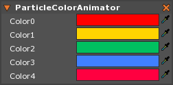
Notice how the BasicParticleEffect object’s particles are now changing from one color to the next over each particle’s lifetime.
- In the Properties Window
- Set Name to:
FabulousParticles
- Set Name to:
- Save the project
Now let’s add another animator.
ParticleAttractor
The ParticleAttractor component is a Particle Animator that causes its particles to be pulled toward their cog’s center.
- In the Properties Window
- Click on Add Component... and then enter:
Particle - Add a ParticleAttractor component
- Click on Add Component... and then enter:
The ParticleAttractor’s Strength property defines how strongly the particles are pulled toward the center. The MinDistance and MaxDistance properties define the bounds within which this pull is applied.
When a particle is within the MinDistance from its center, it is pulled with 100% of the ParticleAttractor’s Strength. A particle that moves past the MinDistance is pulled less and less as it goes. When a particle is beyond the MaxDistance from its center, it is not pulled at all. Refer to the following diagram:
{kind=link}
Here, the black spot in the middle is centered at the location of a particle effect. The radius of the black spot is the attractor’s MinDistance. Within that spot, a particle is pulled with full Strength toward the center. The white region outside of the largest circle represents the area where the attractor has no influence on its particles. The radius of the largest circle is the attractor’s MaxDistance. As a particle moves through the gray areas, it is pulled more or less, depending on whether it is moving toward or away from the center.
- Under SphericalParticleEmitter
- Set RandomVelocity to:
[10, 10, 10]
With high-velocity particles, we’ll need a high-strength attractor.
- Under ParticleAttractor
- Set Strength to:
20- Under SpriteParticleSystem
- Set SystemSpace to:
WorldSpace
- Use the TranslateGizmo to move the FabulousParticles object around
Notice how, when the system’s SystemSpace property is set to WorldSpace, it
is easy to “lose” some of the effect’s particles if you move it quickly enough.
- In the Properties Window
- Under SpriteParticleSystem
- Set SystemSpace back to:
LocalSpace
- Set SystemSpace back to:
- Under SpriteParticleSystem
- Use the TranslateGizmo to move the FabulousParticles object around again
When the SystemSpace is set to LocalSpace, nothing you can do through the
Transform alone can cause the particles to escape.
- In the Properties Window
- Under Transform
- Set Translation to:
[0, 0, 0]
- Set Translation to:
- Under Transform
- Save the project
Next, we’ll learn how to build a fire.
- In the Properties Window
- Under SphericalParticleEmitter
- Set Active to:
false
- Set Active to:
- Under SphericalParticleEmitter
Making Fire
Let’s take what we’ve learned so far and apply it. We’ll take what we know about the real-world phenomenon we’re trying to emulate and use it to make our effect look great.
- Command :
CreateParticleSystemor - Select the BasicParticleEffect object we just created
- In the Properties Window
- Set Name to:
Fire - Under SpriteParticleSystem
- Set Name to:
First of all, let’s use a cool image for each wisp of flame.
- Set Texture to:
Fire
This particular image has a black background that will not be visible if the
RenderMode is set to Additive.
- Set RenderMode to:
Additive
Next, we know that fire is orange.
- Set Tint to:
[R: 128, G: 102, B: 25, A: 1.00],#806619
{kind=link}
That’s it for the system’s properties. Let’s move on to the emitter.
- Under SphericalParticleEmitter
{kind=link}
Now, first off, it’s kind of hard to really see what we’re looking at, so let’s crank the EmitRate up pretty high.
- Set EmitRate to:
800
This fire is exploding in all directions, but we want it to go mostly up.
- Set StartVelocity to:
[0, 4, 0]
A convincing flame generally has something of a teardrop shape, so we want to make the particles in our fire effect appear clustered at the base of the flame and taper upward from there. By making the Y-part of the RandomVelocity match the Y-part of the StartVelocity, we can ensure that the particles’ upward speeds will range from zero to twice the Y-part of the StartVelocity. This will cause the bunching we want. Then, we can throw in a little bit of horizontal variance too, just to make the fire look a bit more chaotic.
- Set RandomVelocity to:
[0.4, 4, 0.4]
Let’s increase the chaos of the effect further by setting the SizeVariance to match the Size and the LifetimeVariance to match the Lifetime.
- Set SizeVariance to:
1- Set LifetimeVariance to:
1
Let’s put a little bit more of a twist on each particle by increasing the SpinVariance.
- Set SpinVariance to:
180
{kind=link}
Now we can really drive the effect home in the LinearParticleAnimator component.
- Under LinearParticleAnimator
Flickers of flame shrink as they rise, so we should apply a negative Growth.
- Set Growth to:
-2
But as these flickers get further away from the source of the heat, they should also slow down a bit.
- Set Dampening to:
1
Finally, we can make the fire dance by giving it plenty of RandomForce.
- Set RandomForce to:
[10, 10, 10]
{kind=link}
One good particle effect deserves another.
- Under Transform
- Set Translation to:
[-6, -6, 0]
- Duplicate the object by pressing
Ctrl + D - In the Properties Window
- Under Transform
- Set Translation to:
[6, -6, 0]
- Set Translation to:
- Under Transform
Let’s turn on all of our effects and see how they all look together.
- Multi-select the SparkleParticles, FabulousParticles, and both Fire objects
- In the Properties Window
- Under SphericalParticleEmitter
- Set Active to:
true
- Set Active to:
- Under SphericalParticleEmitter
- Save the project and run the game
{kind=link}
Finally, we’ll learn how to control the weather.
- Stop the game
- In the Properties Window
- Under SphericalParticleEmitter
- Set Active to:
false
- Set Active to:
- Under SphericalParticleEmitter
Weather Effects
One common practical application of particle effects is simulation of weather. Let’s try a couple of weather effects now.
Make it Rain
So far, the particle effects we’ve seen have all been tightly localized: our Sparkle effect has an emitter radius of 5, and our Fabulous particles all spawn in exactly the same point. But particles don’t necessarily have to be in a tight group like that. Particle effects can quite effectively simulate, say, rain, regardless of the overall size of the area being rained on.
Command :
CreateParticleSystemorIn the Properties Window
- Set Name to:
Rain - Remove the SphericalParticleEmitter component
- Remove the ParticleColorAnimator component
- Add a BoxParticleEmitter component
- Under SpriteParticleSystem
- Set Texture to:
Circle - Set RenderMode to:
Additive - Set Tint to:
[R: 255, G: 255, B: 255, A: 0.4],#FFFFFF - Set SystemSize to:
[50, 50, 4]
- Set Texture to:
- Under BoxParticleEmitter
- Set EmitRate to:
2000 - Set Size to:
0.1 - Set SizeVariance to:
0.1 - Set Lifetime to:
0.6 - Set LifetimeVariance to:
0 - Set StartVelocity to:
[0, -100, 0] - Set RandomVelocity to:
[0, 0, 0] - Set EmitterSize to:
[100, 50, 0]
- Set EmitRate to:
- Under Transform
- Set Translation to:
[0, 35, 0]
- Set Translation to:
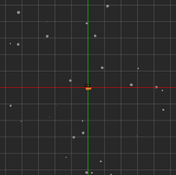
- Set Name to:
It looks alright, but raindrops tend to look better when they’re stretched a
bit. We can accomplish this by changing the particle system’s GeometryMode
property to Beam. (We also have a better sprite we can use for the
particles, so we’ll make that switch too.)
- Under SpriteParticleSystem
- Set GeometryMode to:
Beam- Set VelocityScale to:
0.5- Set Texture to:
FastSpark
Observe how the raindrops are stretched in the direction they’re moving. We can even make it a bit windy by applying some horizontal velocity, and the drops will still be stretched correctly:
- Under BoxParticleEmitter
- Set StartVelocity to:
[10, -100, 0]
We can make it even more blustery by adding some RandomForce to the effect:
- Under LinearParticleAnimator
- Set RandomForce to:
[50, 50, 0]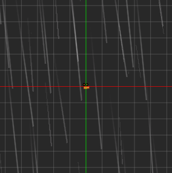
- Save the project
- In the Properties Window
- Under BoxParticleEmitter
- Set Active to:
false
- Set Active to:
- Under BoxParticleEmitter
Make it Snow
For our snow effect, let’s begin by duplicating our rain and modifying the copy.
Duplicate the object by pressing
Ctrl + DIn the Properties Window
- Set Name to:
Snow - Under BoxParticleEmitter
- Set Active to:
true
- Set Active to:
- Under SpriteParticleSystem
- Set Texture to:
Cloud - Set Tint to:
[R: 255, G: 255, B: 255, A: 1.00],#FFFFFF - Set GeometryMode to:
Billboarded
- Set Texture to:
- Under Transform
- Set Translation to:
[0, 15, 0]
- Set Translation to:
- Under BoxParticleEmitter
- Set EmitRate to:
200 - Set Size to:
0.2 - Set SizeVariance to:
0.2 - Set Lifetime to:
10 - Set StartVelocity to:
[0, -5, 0] - Set EmitterSize to:
[100, 10, 0]
- Set EmitRate to:
- Under LinearParticleAnimator
- Set RandomForce to:
[3, 3, 0]
- Set RandomForce to:
- Set Name to:
In the Properties Window
- Under BoxParticleEmitter
- Set Active to:
false
- Set Active to:
- Under BoxParticleEmitter
{kind=link}
Clouds
Let’s cap off our weather systems with a standard Redmond, Washington cloudy sky.
Command :
CreateParticleSystemorIn the Properties Window
- Set Name to:
Clouds - Remove the SphericalParticleEmitter component
- Add a BoxParticleEmitter component
- Under SpriteParticleSystem
- Set Texture to:
Cloud - Set Tint to:
[R: 224, G: 224, B: 224, A: 1.00],#E0E0E0 - Set SortMode to:
Sorted - Set SystemSize to:
[50, 50, 4]
- Set Texture to:
- Under BoxParticleEmitter
- Set Size to:
8 - Set SizeVariance to:
2 - Set Lifetime to:
20 - Set LifetimeVariance to:
10 - Set SpinVariance to:
0 - Set StartVelocity to:
[0.3, 0, 0] - Set RandomVelocity to:
[0.25, 0.05, 0.05] - Set EmitterSize to:
[50, 4, 0]
- Set Size to:
- Set Name to:
Under Transform
- Set Translation to:
[0, 10, 0]
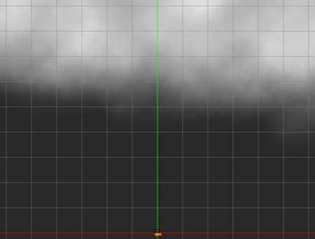
- Set Translation to:
Take note of how it takes several seconds for the sky to populate itself properly with clouds. We want the clouds to appear all at once, so we have to fix this problem. That’s where the SpriteParticleSystem component’s WarmUpTime property comes in: it “primes” the system by making it as if it had been already been running when it is first created.
Using a high value for WarmUpTime can be somewhat expensive, so it’s good practice to keep it as small as necessary to make its effect clear. In this case, with the way that we’ve created our cloud system, a WarmUpTime of about half the emitter’s Lifetime should do the trick.
- In the Properties Window
- Under SpriteParticleSystem
- Set WarmUpTime to:
10
- Set WarmUpTime to:
- Under SpriteParticleSystem
- Save the project
- Select the LevelSettings object
- In the Properties Window
- Under CameraViewport
- Set Scaling to:
Letterbox
- Set Scaling to:
- Under CameraViewport
- Select the Rain object
- In the Properties Window
- Under BoxParticleEmitter
- Set Active to:
true
- Set Active to:
- Under BoxParticleEmitter
- Run the game and watch the Clouds and Rain effects together
- Stop the game
- In the Properties Window
- Under BoxParticleEmitter
- Set Active to:
false
- Set Active to:
- Under BoxParticleEmitter
- Select the Snow object
- In the Properties Window
- Under BoxParticleEmitter
- Set Active to:
true
- Set Active to:
- Under BoxParticleEmitter
- Run the game and watch the Clouds and Snow effects together
Now we know the basics of particle effects and how to manipulate them through Particle Systems, Particle Emitters, and Particle Animators.